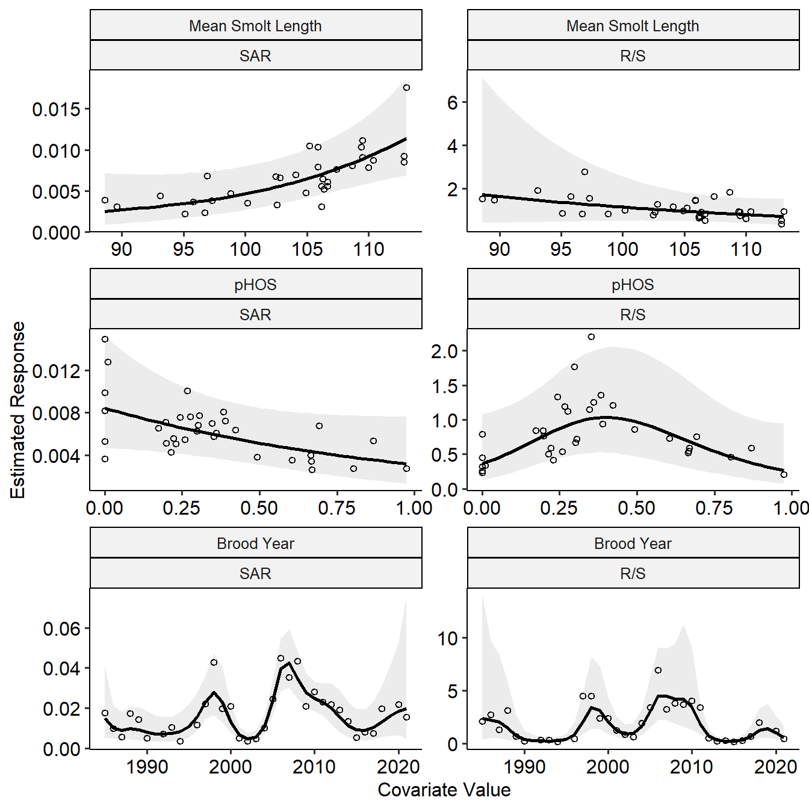

Examination of Selected Factors Affecting Survival and Productivity of Tucannon River Spring Chinook Salmon and Implications for the Future
Introduction
The goals of this work are to:
- Examine several covariates to determine if they help explain fluctuations in Tucannon Spring Chinook productivity as measured in smolts/spawner. These possible covariates include:
- the total number of spawners each brood year,
- pHOS,
- proportion of strays,
- the mean river kilometer of the redd distribution that year,
- the standard deviation of the redd river kilometer and
- the year of smolt emigration.
- Determine if smolt size (e.g. mean fork length) or pHOS has an impact on various recruitment metrics such as:
- total (ages 3-5) SAR,
- returns per spawner,
while accounting for possible effects of brood year.
Methods - Data Analysis
Covariates
We investigated the influence of hatchery-origin spawners on smolts per spawner by using the proportion of hatchery origin spawners (pHOS) as a covariate. In addition, we examined the potential effect of out-of-basin hatchery strays to explore the possibility that out-of-basin hatchery fish could have a different impact on smolts per spawner than the integrated hatchery fish of the Tucannon program. Because pHOS and the proportion of out-of-basin hatchery strays are correlated (\(r\) = 0.63, Table 1), instead of using both covariates independently, we included pHOS as a covariate, and the interaction between pHOS and the proportion of strays. This interaction represents the difference between Tucannon hatchery origin spawners and out-of-basin hatchery origin spawners.
Differences in local rearing habitat within the Tucannon may also contribute to differences in smolts per spawner because of how redds can be distributed across the watershed. The hatchery weir on the Tucannon is located at rkm 59, and may impact adult passage through delays, etc. (Wilson and Buehrens 2024). The habitat in the upper watershed is more pristine while the habitat in the lower watershed is more heavily impacted. Because many summary statistics describing these phenomenon (e.g., proportion of redds above/below the weir, proportion in the upper watershed, proportion in the lower watershed, etc.) are highly correlated, we chose to examine the mean rkm of the redds each year as a singular covariate that describes many of these general patterns. We hypothesize that the greater the mean redd rkm (i.e., due to more redds higher in the watershed, towards better habitat and above the weir), the greater smolts per spawner will be observed. We also included as a covariate the standard deviation of the redd rkms, as a measure of how concentrated (small value) or dispersed (high value) the redds were within the watershed in a given year.
x | y | r |
|---|---|---|
phos | stray_prop | 0.632 |
spawners | mean_rkm | 0.500 |
stray_prop | sd_rkm | 0.322 |
spawners | stray_prop | -0.281 |
stray_prop | mean_rkm | -0.251 |
phos | mean_rkm | -0.108 |
phos | sd_rkm | 0.086 |
spawners | phos | -0.063 |
spawners | sd_rkm | 0.041 |
mean_rkm | sd_rkm | -0.037 |
Statistical Models
To examine the effects of these covariates on smolts per spawner, we fit a generalized additive model (GAM), using the log of smolts per spawner as the dependent variable, and spline terms for mean rkm of redds, standard deviation of rkm per redds, pHOS, and emigration year. The inclusion of emigration year helps to control for long-term trends and effects that are not accounted for by the other covariates. We used a GAM to allow for the possibility of non-linear relationships between the independent variables and productivity. We also included two fixed terms: the number of spawners and an interaction between pHOS and the proportion of out-of-basin strays. The inclusion of spawners as a fixed term assumes a linear relationship between the log of smolts per spawner and the total number of spawners, which implies a Ricker-like carrying capacity. We made this choice because every ecological system is subject to some carrying capacity constraints (Chapman and Byron 2018), and the linearized Ricker model is a common and easily implemented method to incorporate that, while allowing us to allocate more degrees of freedom to the splines of the other covariates.
We also examined the effects of mean smolt length and pHOS on productivity by fitting two more GAMs using total (Age 3+) SAR and R/S as the dependent variables. We included splines for the covariates of the mean smolt length of each brood year and pHOS, as well as brood year. The SAR model was fit using a quasibinomial GAM with a logit link function because the SARs are proportions, whereas for the R/S model, we used a linear GAM with a log link function and also included spawners as a linear parametric covariate, to make this model a linearized Ricker model.
Our goal with these analyses is to examine general patterns of how a few covariates affect the population’s productivity, not necessarily test hypotheses or predict future productivity. The dataset has 35 data points; therefore, we limited the number of knots in all splines to a maximum of four for all covariates except emigration or brood year, which we allowed to be larger as that term was meant to capture any other processes and long-term trends. We fit a spline for year, rather than treating year as a random effect, because we expected the effects to be auto-correlated and to capture any long-term trend. The model was fit using R statistical software version 4.3.2 (R Core Team 2023) with the mgcv package, using restricted maximum likelihood methods. We checked the effective degrees of freedom in each model fit using the “k.check()” function to ensure against underfitting, while the use of penalized splines guarded against overfitting. Data and code to reproduce this analysis is available on a GitHub repository (https://zenodo.org/records/17957317).
Results
Diagnostic checks for all models were sufficient to ensure we did not underfit any models by overly restricting the number of knots in the various splines. The summary statistics for each model, including the pseudo-\(R^2\) value and the percent of deviance explained by each model are provided in Table 2. All models had fairly high pseudo-\(R^2\) values (range of 0.61 – 0.88) and explained a high proportion of the variance (74-92%). To examine the results of the GAMs, we plotted the marginal smoothing plots of each covariate to display how the model predictions change as each covariate shifts, holding the others at a constant value.
Model | R.sq | Dev. Explained |
|---|---|---|
Smolts Per Spawner | 0.609 | 0.744 |
Total SAR | 0.876 | 0.922 |
Total Returns Per Spawner | 0.795 | 0.895 |
Smolts Per Spawner
Table 3 shows the estimates of parametric coefficients (intercept, slope of linearized Ricker model and the interaction between pHOS and the proportion of out-of-basin strays), while Table 4 shows the estimated effective degrees of freedom (edf) of each covariate, and the p-value associated with it. An edf of one is equivalent to a linear function, an edf of two is equivalent of a quadratic function, and higher edfs correspond to more complex functions. Redds had a negative effect on smolts / redd, indicating there is a density dependent effect within this system. The interaction between pHOS and out-of-basin stray proportion was estimated to be negative, but not statistically significant.
Term | Estimate | Std Error | Statistic | P Value | Conf Low | Conf High |
|---|---|---|---|---|---|---|
(Intercept) | 4.593 | 0.178 | 25.835 | 0.000 | 4.245 | 4.942 |
spawners | -0.001 | 0.000 | -3.145 | 0.005 | -0.002 | -0.000 |
phos:stray_prop | -2.650 | 2.438 | -1.087 | 0.289 | -7.429 | 2.129 |
Term | Edf | Ref Df | Statistic | P Value |
|---|---|---|---|---|
s(mean_rkm) | 1.000 | 1.000 | 0.003 | 0.956 |
s(sd_rkm) | 2.601 | 2.876 | 6.610 | 0.004 |
s(phos) | 1.000 | 1.000 | 9.277 | 0.006 |
s(emigration_yr) | 5.153 | 6.436 | 5.530 | 0.001 |
Figure 2 shows the marginal effects of each covariate on predicted smolts per spawner, assuming the others are fixed at their mean values. Although the mean redd rkm showed little effect, the smoothed spline of the standard deviation of redd rkm suggest that higher standard deviations (i.e., more dispersed redds) leads to higher predicted values of smolts per spawner. The effect of pHOS suggests that higher levels of pHOS are associated with higher productivity, although when hatchery origin spawners are made up of a higher proportion of out-of-basin strays, that effect is dampened. The estimated smolt capacity, based on the fitted Ricker curve (Figure 2 A) is 41,286 smolts, which occurs when there are 845 spawners in the system.

r smolt_capacity$spawners) that lead to the maximum number of smolts (r prettyNum(round(smolt_capacity$smolts), big.mark = ‘,’)`) which is depicted by the horizontal dashed line. The vertical dashed line in B represents the location of the weir.
SAR and Returns/Spawner
For the R/S models, Table 5 shows the parameter estimates of the intercept and slope that are part of the linearized Ricker model. In the returns / spawner model, spawners had a statistically negative effect, indicating the presence of density dependence sometime between the egg and spawner lifestage. The estimated edf of each covariate for both SAR and R/S models, and the P-values associated with it are found in Table 6. The mean smolt length was statistically significant in the SAR model, but not the R/S model. We found that pHOS was not statistically significant in any model, while the brood year spline was significant in all models.
Term | Estimate | Std Error | Statistic | P Value | Conf Low | Conf High |
|---|---|---|---|---|---|---|
(Intercept) | 0.683 | 0.275 | 2.487 | 0.024 | 0.145 | 1.221 |
spawners | -0.003 | 0.001 | -3.686 | 0.002 | -0.004 | -0.001 |
Model | Returns | Term | Edf | Ref Df | Statistic | P Value | Sig |
|---|---|---|---|---|---|---|---|
SAR | Total | s(mean_smolt_length) | 1.322 | 1.530 | 4.185 | 0.024 | * |
SAR | Total | s(phos) | 1.000 | 1.000 | 2.951 | 0.102 | - |
SAR | Total | s(brood_yr) | 11.525 | 13.757 | 7.048 | 0.000 | *** |
Returns/Spawner | Total | s(mean_smolt_length) | 1.000 | 1.000 | 1.015 | 0.328 | - |
Returns/Spawner | Total | s(phos) | 2.370 | 2.675 | 2.743 | 0.059 | - |
Returns/Spawner | Total | s(brood_yr) | 11.745 | 14.052 | 6.254 | 0.000 | *** |
The estimated Ricker curve of R/S, with the negative relationship of spawners on R/S is shown in Figure 3, while Figure 4 shows the marginal effect of smolt length, pHOS, and brood year on the various recruitment metrics. The estimated maximum returns (Figure 3 A) are 389 total (Age 3+) returns, which occur when there are 397 spawners respectively in the Tucannon River. Mean smolt length appears to have a positive association with SAR, but a negligible one with R/S. On the other hand, pHOS shows a negative association with SAR, and a non-linear but not significant relationship with R/S. The smoothed spline for brood year shows a few periods with higher SAR and R/S compared with other periods in the time-series.



References
Chapman, E. J., and C. J. Byron. 2018. The flexible application of carrying capacity in ecology. Global Ecology and Conservation 13:e00365.
Wilson, J. T., and T. W. Buehrens. 2024. Weirs: An effective tool to reduce hatchery–wild interactions on the spawning grounds? North American Journal of Fisheries Management 44(1):21–38.